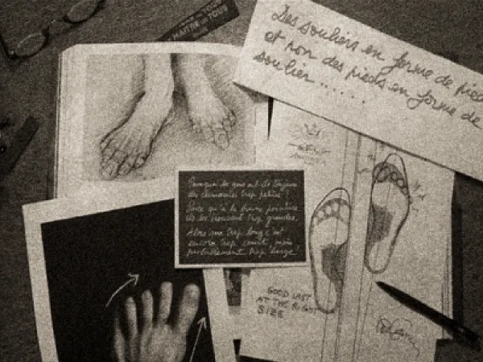
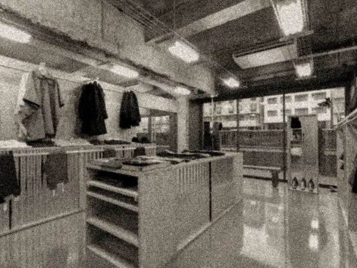
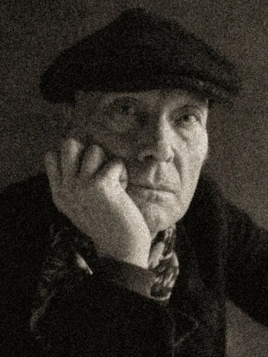
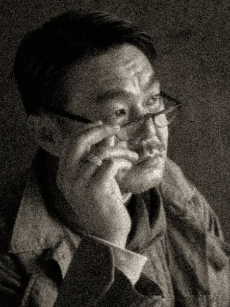

INTRO
"伝統で無いものは、すべて盗作である" – ユージェニオ・ドール
ピエール・フルニエが1994年にフランス・パリでANATOMICAをオープンしたのは、当時メンズシーンから失われていた、または失われつつあった伝統的なヨーロッパのファッションを蘇らせるためだった。歴史と伝統、そして自身によるフィット感に拘った「アナトミカル（解剖学的）」なコレクションを展開。その後、2006年の寺本欣児との出会いによってANATOMICAに新たな方向性が加わる。2人のフィルターを通した、日本のものづくりによるアメリカンテイスト・ガーメントの誕生となる。
CONCEPT
ヨーロッパ、アメリカ及びアジアの歴史と伝統、そしてフィッティングへの拘りをベースに、最上の素材を使用し、人体の構造と動きに沿ったアナトミカル（解剖学的）なモノづくりをコンセプトとする。時代や物事に流されない普遍的で且つエレガントなオリジナルコレクションを展開する。ANATOMICAを象徴するロゴマークには、木靴を照らす王冠のように「人々を照らす永遠のワードローブでありたい」というピエールの想いが込められている。
BRAND HISTORY
1975
パリ・レアール地区に
GLOBEをオープン
ピエール・フルニエは、パリ・レアール地区にGLOBE（グローブ）を開店。現代のセレクトショップの先駆けと称される店で、かの有名なアメリカを代表するジーンズからヨーロッパやアメリカの軍モノやデッドストック品等、ピエールによって世界中から選び抜かれた「本物」がエレガントに陳列され、当時のパリでは衝撃的で先進的な品揃えを誇った。
1979
パリ・16区に
HEMISPHEREをオープン
パリ・16区のグランド・アルメ通りに、北半球を意味するHEMISPHERE（エミスフェール）を開店。当時サンローランのナンバー3として活躍していたジャン・セバスチャンがピエール・フルニエのセンスに目を付け、HEMISPHEREオープンに至る。アメリカでも限られた人の目にしか触れられていなかった民芸ブランド等を世界に広めたのも同店であり、日本進出も果たす。1993年、共同経営者の逝去により閉店。
1994
ANATOMICA、
フランスはパリで産声をあげる
ピエールは海外生産や工程の簡略化によって品質が急激に低下した外部委託生産を取り止め、自身のコレクションを本国フランスで生産することを決意。HEMISPHERE閉店の翌年、HEMISPHEREからの付き合いであるジルベール・ヌースと共にANATOMICAを立ち上げ、パリ・4区に店を開店する。そのコレクションは、自身のアーカイヴをオマージュしながらフランスの伝統を守り抜き、そして更なるフィット感への拘りをベースとした、人体の構造と動きに沿った作品作りであり、伝統的な作業着や軍服のディテールを忠実に再現することを理念とする。

2006
ピエールと寺本が出会う
ANATOMICAを訪れた寺本欣児のジーンズが、ピエールの目に留まる。アパレル・デザイナーである寺本は孤高のヴィンテージコレクターでもあり、この時サイドシームが全くないジーンズを着用していた。それまでフランスのヴィンテージに注力し、アメリカンヴィンテージには背を向けてきたピエールだったが、彼が忘れようとしていた記憶と情熱が再燃。そして、ANATOMICAブランド初のジーンズを開発することになる。ピエールと寺本が共同でデザインするアメリカンテイスト・ガーメント誕生の瞬間である。
このANATOMICAブランド初のジーンズ「618 ORIGINAL」は、15ヶ月以上もの月日をかけて2007年秋に完成。その後ピエールと寺本がパートナー契約を交わし、2人のフィルターを通した、日本のモノづくりによるアメリカンテイスト・ガーメントがANATOMICAの新たな方向性に加わる。2人が好む1960年代のアメリカンテイストから、ミリタリーアイテム、イギリスのトラディショナルなアイテム、スニーカー、レディースラインの代表作マリリンと、次々にヒット作を生み出す。
2011
東京・東日本橋に
ANATOMICA TOKYOをオープン
2008年、華やかな神宮前エリアの商業ビルにショップインショップとして日本1号店を開店。この経験が、独立店舗を立ち上げたいというピエールと寺本の想いに火をつけ、程なく、江戸時代から商業の中心地であった東日本橋に、旗艦店に相応しい物件を見つける。2011年、ANATOMICA TOKYOを開店し、札幌、名古屋、神戸、青山、福岡に次々とショップをオープンする。

KEY PERSON

ピエール・フルニエ
PIERRE FOURNIER
1944年フランス生まれ。1975年パリ・レアール地区に「GLOBE」、1979年パリ・16区に「HEMISPHERE」、1994年にANATOMICAを立ち上げ、世界のアパレル業界に最も大きな影響を与えた人物の一人。その場所やその民族でしか生まれてこないオリジナルに興味を持ち、数々の「本物」をアパレル業界に送り出してきた。ANATOMICAのディレクターとしてブランドのモノづくりを指揮し、デザイナー寺本欣児と共にANATOMICAL UTOPIAを目指す。

寺本 欣児
KINJI TERAMOTO
1964年兵庫県生まれ。60歳の夏で35周年を迎えるという独自のカウント方式で、1989年、当時25歳で「35SUMMERS」を設立。Rocky Mountain Featherbed、BIG YANKを始めとする所有ブランドを日本国内や海外で展開。アパレル・デザイナーでもあり、ヴィンテージコレクターとしても世界中に名を馳せる。自身が若い時に出会い、多大な影響を受けたピエール・フルニエとパートナーシップを組み、ANATOMICAのデザインや生産、そして日本展開を担う。